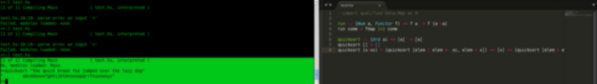

Prannay Khosla|
Hi, I am a web #developer and #designer. I also work in Haskell like anyone with a knack for interesting stuff. My primary interests are backend optimization, Machine Learning and Artificial Intelligence. I also am a hard core fan of Metal and Classic Rock.
Have an out of the box idea?
Work with me
or just scan throught my previous work and choose to work with me.
or just scan throught my previous work and choose to work with me.